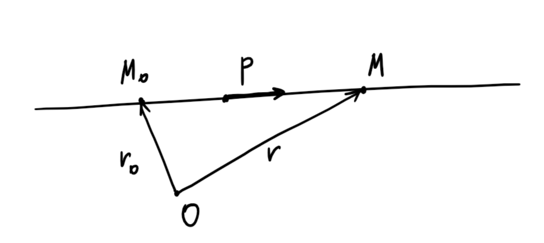
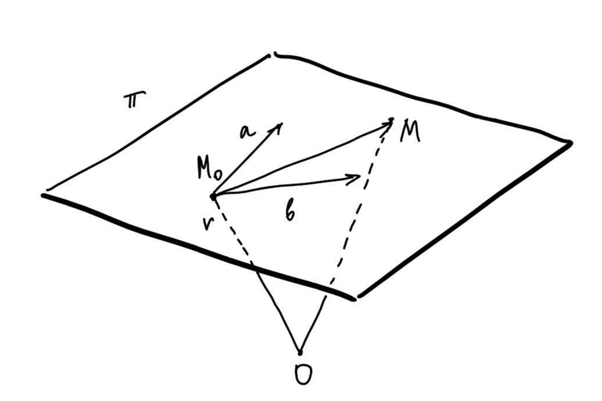
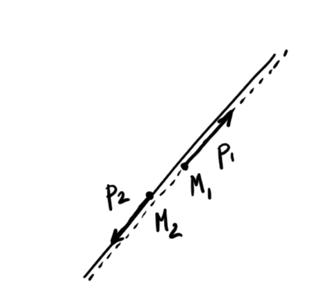
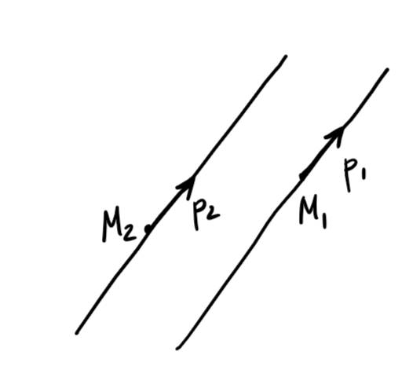
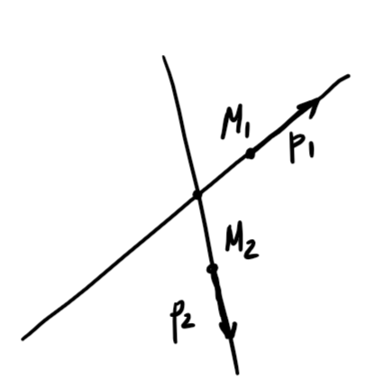
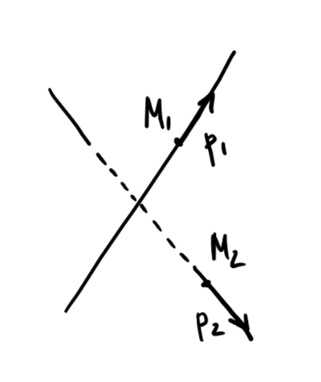
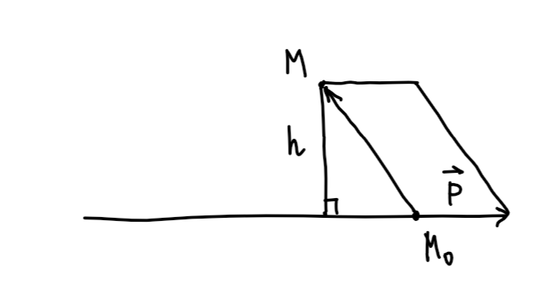
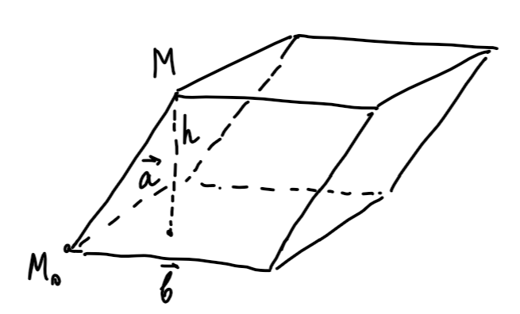
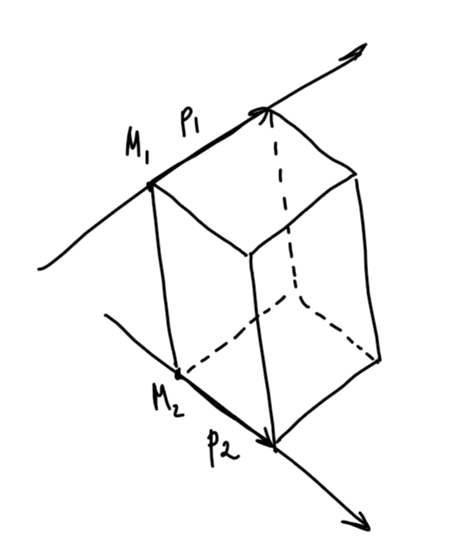

2023
почему в аналитической геометрии происходит какая-то дичь. у нас мильон каких-то непонятных неопредляемых понятий, как-то угол (ладно, тут нужны площади и пределы, чтобы считать длину окружности типо я умная, да 😉), вектор (хорошо, если считать, что есть алгебраическая структура (что это) – векторное пространство, то еще ничего), прямая, луч, коллинеарность, параллельность. И мы еще доказываем что только прямые – это линии первого порядка (просто что?).
Теперь снова типо я умная 🙄.
Почему нельзя сказать, что прямая – это по определению линия первого порядка? Вектор – элемент вектрного пространства? Коллинеарность – линейная зависимость векторов?Определение: Вектор – это упорядоченная пара точек или направленный отрезок.
Обозначение: нулевой вектор – \(\vec{0}\). Это отрезок длины \(0\).
Определение: Векторы \(\vec{a} = \vec{M_1N_1}, \,\,\,\, \vec{b} = \vec{M_2N_2}\) равны, если:
Утверждение: (критерий равенства векторов) Векторы \(\vec{a} = \vec{M_1N_1}, \,\,\,\, \vec{b} = \vec{M_2N_2}\) равны тогда и только тогда, когда середины отрезков, соединяющих начала и концы векторов совпадают.
Определение: Отношение \(R \subset X \times Y\) (обозначение для \(\langle x_1, x_2\rangle \in R: x_1 \sim x_2\)) – отношение эквивалентности, если:
Определение: Класс эквивалентности \(a \in X\) – это множество всех элементов \(X\) эквивалентных данному. \(C_a = \{x \in X: \,\,\,\, x \sim a\}\)
Теорема: Пусть \(a, b \in X, \,\,\,\, C_a, C_b\) – классы эквивалентности. Тогда:
Доказательство: очев \(\,\,\,\,\blacksquare\)
Теорема: Равенство векторов – это отношение эквивалентности.
Доказательство: как будто тоже очев \(\,\,\,\,\blacksquare\)
Определение: Свободный вектор – это класс эквивалентности вектора \(\vec{a}\). С этого момента “вектор” обозначает свободный вектор, если не сказано иное.
Пусть \(a, b\) – свободные векторы. \(\vec{MN} \in a, \,\,\,\, \vec{NP} \in b, \,\,\,\, \lambda, \mu \in \mathbb{R}\). Операции над векторами определяются для свободных векторов.
Доказательство: планик \(\,\,\,\,\blacksquare\)
Определение: Ось – это прямая и выбранный на ней вектор \(e\). \(e\) – задает положительное направление.
Определение: Алгебраическое значение вектора \(a\) на вектор \(e\)(\(\operatorname{аз}_{e}a\)) – это \(\alpha: \alpha \cdot e = a\).
Лемма: (Об отсутствии делителей нуля) Пусть \(a\) – свободный вектор. Тогда \(\alpha \cdot a = 0 \Rightarrow \alpha = 0\) или \(a = 0\).
Доказательство: очень даже не очев.
Лемма: (О линейности алгебраического значения)
Доказательство:
Лемма: (Шаля) \[\operatorname{аз}_{e}(MN) + \operatorname{аз}_{e}(NP) = \operatorname{аз}_{e}(MP)\]
Доказательство: Следует из леммы.
Определение: Выражение \(\lambda_1a_1 + \ldots + \lambda_na_n\) – линейная комбинация векторов \(a_1, \ldots, a_n\).
Если \(\lambda_1^2 + \ldots + \lambda_n^2 \ne 0\), то линейная комбинация нетривиальная.
Если \(\lambda_1^2 + \ldots + \lambda_n^2 = 0\), то линейная комбинация тривиальная.
Определение: Векторы \(a_1, \ldots, a_n\) – линейно зависимы, если существует их нетривиальная линейная комбинация равная \(0\).
Определение: Векторы \(a_1, \ldots, a_n\) – линейно независимы, если только их тривиальная линейная комбинация равна \(0\).
Утверждение: Система из одного вектора линейно зависима тогда и только тогда, когда этот вектор нулевой.
Доказательство: Лемма об отсутствии делителей нуля.
Утверждение: Пусть \(\mathcal{A}, \mathcal{B}\) – системы векторов. \(\mathcal{A} \subset \mathcal{B}, \,\,\,\, \mathcal{A}\) – линейно зависима. Тогда \(\mathcal{B}\) – линейно зависима.
Доказательство: очев \(\,\,\,\,\blacksquare\)
Утверждение: \(\mathcal{A}\) – линейно зависима \(\Leftrightarrow \,\,\,\, a \in \mathcal{A}: \,\,\,\, a\) – это линейная комбинация остальных векторов из \(\mathcal{A}\).
Доказательство: почти очев \(\,\,\,\,\blacksquare\)
Определение: Векторы коллинеарны, если они параллельны одной и той же прямой.
Утверждение: Векторы коллинеарны \(\iff\) они линейно зависимы.
Доказательство:
Утверждение: Любые 3 вектора на плоскости линейно зависимы.
Доказательство:
Утверждение: Любые 4 вектора в пространстве линейно зависимы.
Доказательство:
Определение: Векторное (линейное) пространство \(V\) над полем \(F\) – это множество с операциями: \[+: V \times V \to V\] \[*: F \times V \to V\] Для которого выполнены аксиомы:
\(\forall \,\,\,\, a, b, c \in V, \,\,\,\, \lambda, \mu \in F\)
Утверждение: Множество всех свободных векторов с введенными операциями сложения и умножения – это векторное пространство.
Доказательство: теорема о \(8\) свойствах
Определение: Система векторов \(\{e_1, \ldots, e_n\} \subset V\) полная, если \(\forall \,\, v \in V \,\,\,\, \exists \,\, x_1, \ldots, x_n: \,\,\,\, v = x_1e_1 + \ldots + x_ne_n\)
Определение: Базис – это полная линейно независимая система векторов.
Утверждение: Базис \(R^n, \,\,\,\, n = 1, 2, 3\) состоит из \(n\) векторов.
Доказательство: см. здесь
Определение: Координаты вектора \(v\) в базисе \(B\) – это коэффиценты его линейного выражения через векторы базиса.
Утверждение: Координаты вектора \(v\) в базисе \(B\) единственны.
Доказательство: очев \(\,\,\,\,\blacksquare\)
Определение: Ортогональная проекция вектора \(b\) на вектор \(a\) – это … Обозначение \(\operatorname{пр}_{a}b\)
Лемма: (Линейность ортогональной проекции)
Доказательство:
Определение: Угол между векторами.
Определение: Скалярное произведение векторов \(a, b \,\,\,\,\,\,\,\, (a, b) = |a| \cdot |b| \cos{\varphi}\), где \(\varphi\) – угол между векторами \(a\) и \(b\).
Теорема: (О \(4\)-х свойствах)
Доказательство:
Утверждение: \[|(a, b)| \le |a| \cdot |b|\]
Доказательство: \[|\cos{\varphi}| = \left|\frac{(a, b)}{|a|\cdot |b|}\right| \le 1 \,\,\,\,\blacksquare\]
Упражнение: Пусть в тетраэдре \(2\) пары перепендикулярных противоположных ребер. Доказать, что оставшиеся ребра перпендикулярны.
Определение: Базис ортонормированный, если скалярное произведение любых двух неравных векторов базиса равно нулю, а скалярное произведение равных векторов (вектор умножается сам на себя) равно единице.
Теорема: Базис \(\{e_1, e_2\}\) ортонормированный \(\iff (a, b) = x_1x_2 + y_1y_2\), где \(x_1, y_1, x_2, y_2\) – координаты векторов \(a, b\) в базисе \(\{e_1, e_2\}\).
Доказательство: хмм, мне лень это писать. а зря, память то дырявая.
Утверждение: В ортонормированном базисе \(\{e_1, e_2\}\) скалярное произведение векторов \(a, b\) равно \[(a, b) = x_1x_2 + y_1y_2\]
Доказательство: Пусть координаты векторов \(a, b\) в базисе \(\{e_1, e_2\}\) – это \(a = \{x_1, y_1\}, \,\,\,\, b = \{x_2, y_2\}\). Тогда \[(a, b) = (x_1e_1+y_1e_2, x_2e_1+y_2e_2) = x_1x_2(e_1, e_1)+x_1y_1(e_1, e_2)+y_1x_2(e_2, e_1)+y_1y_2(e_2, e_2) \,\,\,\,\blacksquare\]
Определение: Аффинная система координат (репёр) – это пара \(\{O, B\}\). Точка \(O(x_1 , \ldots, x_n)\) – начало координат. \(B=\{e_1, \ldots, e_n\}\) – базис. Обозначение: \(Oe_1 , \ldots, e_n\).
Определение: Радиус-вектор точки \(M\) в репере \(Oe_1 , \ldots, e_n\) – это вектор \(\vec{OM}\).
Определение: Координаты т. \(M\) в репере \(Oe_1 , \ldots, e_n\) – это координаты ее радиус-вектора в этом репере.
Определение: Прямоугольная система координат – это аффинная система координат с ортонормированным базисом.
Определение: Отрезок \(AB\) делится точкой \(C\) в отношении \(\lambda\), если \(\vec{AC} = \lambda \cdot \vec{CB}\)
Пусть заданы два базиса векторного пространства \(V\) \(B_1 =\{e_1, \ldots, e_n\}\) и \(B_2 = \{f_1, \ldots, f_n\}\). Выразим векторы \(B_1\) через векторы \(B_2\):
\[e_1 = c_{11} f_1 + \ldots + c_{n1} f_n\] \[e_2 = c_{12} f_1 + \ldots + c_{n2} f_n\] \[\vdots\] \[e_n = c_{1n} f_1 + \ldots + c_{nn} f_n\]
Получаем:
\[\left(\begin{array}{c} e_1 \\ e_2 \\ \vdots\\ e_n \end{array}\right)= \left(\begin{array}{cccc} c_{11} & c_{21} & \ldots & c_{n1} \\ c_{12} & c_{22} & \ldots & c_{n2} \\ \vdots & \vdots & \ddots & \vdots \\ c_{1n} & c_{2n} & \ldots & c_{nn} \end{array}\right)\cdot \left(\begin{array}{c} f_1 \\ f_2 \\ \vdots\\ f_n \end{array}\right)\]
\[\left(\begin{array}{cccc} e_1 & e_2 & \ldots& e_n \end{array}\right)=\left(\begin{array}{cccc} f_1 & f_2 & \ldots& f_n \end{array}\right)\cdot \left(\begin{array}{cccc} c_{11} & c_{12} & \ldots & c_{1n} \\ c_{21} & c_{22} & \ldots & c_{2n} \\ \vdots & \vdots & \ddots & \vdots \\ c_{n1} & c_{n2} & \ldots & c_{nn} \end{array}\right)\]
Определение: \[C = \left(\begin{array}{cccc} c_{11} & c_{12} & \ldots & c_{1n} \\ c_{21} & c_{22} & \ldots & c_{2n} \\ \vdots & \vdots & \ddots & \vdots \\ c_{n1} & c_{n2} & \ldots & c_{nn} \end{array}\right)\] матрица перехода от базиса \(B_1\) к базису \(B_2\).
Утверждение: (Произведение матриц перехода – матрица перехода) Произведение невырожденных матриц – невырожденная матрица.
Доказательство: Произведение матриц.
Утверждение: \(C\) матрица перехода \(\Leftrightarrow C\) – невырождена.
Доказательство: линейная независимость векторов в базисе.
:-)
К переходу от одного базиса к другому добавляется столбец с координатами начала координат.
\[C_{n \times n} = \left(\begin{array}{cccc} c_{11} & \ldots & c_{1n}\\ \vdots & \ddots & \vdots \\ c_{n1} & \ldots & c_{nn} \end{array}\right)\]
Определение: Матрица ортогональная, если:
Теорема: (О \(5\) свойствах) Определение ортогональной матрицы корректно.
Доказательство:
Утверждение: Если матрица \(C\) – ортогональная, то \(\det{C} = \pm 1\)
Доказательство: По определению ортогональной матрицы \(C\cdot C^T = E \Rightarrow |C\cdot C^T| = |E| \Rightarrow |C|\cdot |C^T| = 1 \Rightarrow \det{C} = \pm 1 \,\,\,\,\blacksquare\)
Утверждение: Пусть базис \(e\) – ортонормированный, \(e’ = e \cdot C\). Тогда:
\(C\) – ортогональная матрица \(\Leftrightarrow\) \(e’\) – ортонормированный базис.
Определение: Два базиса \(e_1 , \ldots, e_n\) и \(e_1’ , \ldots, e_n’\) – одноименными, если матрица перехода \(C\) от одного базиса к другому имеет положительный определитель.
Утверждение: Одноименность на множестве всех базисов в векторном пространстве \(V\) – отношение эквивалентности.
Доказательство:
Определение: Задание ориентации в векторном пространстве \(V\) – это выбор одного из двух классов эквивалентности одноименных базисов.(!)
Определение: Базис положительный, если он принадлежит классу эквивалентности, выбранному при задании ориентации в векторном пространстве.
Определение: Ориентированная длина вектора – это длина этого вектора, взятая со знаком плюс, если вектор ориентирован положительно, то есть базис, состоящий из этого вектора принадлежит положительному классу эквивалентности векторов, и со знаком минус иначе. Если длина вектора равна нулю, то есть он не является базисом, то ориентированная длина равна нулю.
Определение: Ориентированная площадь параллелограмма (\(2\)-х векторов) равна \(0\), если векторы коллинеарны (т.е. не являются базисом в \(\mathbb{R}^2\)), иначе: если \(2\)-ка векторов ориентированна положительно, то площадь параллелограмма, построенного на этих векторах, взятая со знаком плюс, и со знаком минус иначе.
Обозначается: \(\langle a, b \rangle\)
Утверждение: Ориентированная площадь параллелограмма \(\langle a, b\rangle\) – линейна, то есть:
Доказательство:
Утверждение: В ортонормированном базисе \(\{e_1, e_2\}\) \[\langle a, b\rangle = \left|\begin{array}{cc} x_1 & y_1 \\ x_2 & y_2 \end{array}\right|,\] где \(x_1, y_1, x_2, y_2\) координаты векторов \(a, b\) в базисе \(\{e_1, e_2\}\).
Доказательство: \[\langle a, \,\,\,\,b\rangle = \langle x_1\cdot e_1 + y_1\cdot e_2,\,\,\,\, x_2 \cdot e_1 + y_2 \cdot e_2\rangle =\] \[\langle x_1\cdot e_1,\,\,\,\, x_2 \cdot e_1 + y_2 \cdot e_2\rangle + \langle y_1\cdot e_2,\,\,\,\, x_2 \cdot e_1 + y_2 \cdot e_2\rangle =\] \[x_1 x_2 \langle e_1,\,\,\,\, e_1\rangle + x_1 y_2 \langle e_1, \,\,\,\, e_2\rangle + y_1 x_2 \langle e_2,\,\,\,\, e_1\rangle + y_1 y_2 \langle e_2, e_2\rangle =\] так как базис ортонормированный \[=x_1 y_2 - y_1 x_2 = \left|\begin{array}{cc} x_1 & y_1 \\ x_2 & y_2 \end{array}\right| \,\,\,\,\blacksquare\]
Определение: Ориентированная площадь треугольника \(ABC\) – это $, $.
Определение: Угол от первого вектора до второго – это угол между векторами, взятый со знаком ориентации пары векторов.
Утверждение: (Линейность угла от олного вектора до другого)
все как у параллелограмма.
Определение: Векторное произведение векторов \(a, b\) – это вектор \(c = [a, \,\,\,\,b]\), такой что:
Определение: Смешанное произведение 3-х векторов – это \(([a, b], c)\), т.е. скалярное произведние векторного произведения первых двух векторов и третьего вектора.
Утверждение: \[([a, b], c) = \langle a, b, c\rangle \]
Доказательство: \(\langle a, b, c\rangle = S_{(a, b)}\cdot \operatorname{аз}_{n}\operatorname{пр}_{n}c\), где \(n\) – вектор единичной длины перпендикулярный плоскости, построенной на векторах \(a, b\), так чтобы тройка \(a, b, n\) была ориентирована положительно. \(([a, b], c) = |[a, b]|\cdot|c|\cdot \cos{\angle([a, b], c)} = S_{(a, b)}\cdot \operatorname{аз}_{n}\operatorname{пр}_{n}c \,\,\,\,\blacksquare\)
Утверждение: (Линейность векторного произведения)
Доказательство:
Утверждение: В прямоугольной системе координат с базисом \(\{e_1, \,\,\,\, e_2, \,\,\,\,e_3\}\) векторное произведение векторов \(a = \{x_1, \,\,\,\,y_1,\,\,\,\, z_1\}, \,\,\,\, b = \{x_2, \,\,\,\,y_2, \,\,\,\,z_2\}\) равно:
\[«\begin{vmatrix} x_1 & y_1 & z_1 \\ x_2 & y_2 & z_2 \\ e_1 & e_2 & e_3 \end{vmatrix}» = \{\left|\begin{array}{cc} y_1 & z_1 \\ y_2 & z_2 \end{array}\right|,\,\,\,\, -\left|\begin{array}{cc} x_1 & z_1 \\ x_2 & z_2 \end{array}\right|,\,\,\,\, \left|\begin{array}{cc} x_1 & y_1 \\ x_2 & y_2 \end{array}\right|\}\]
Доказательство: \[[a, b] = [x_1 \cdot e_1 + y_1 \cdot e_2 + z_1 \cdot e_3, x_2 \cdot e_1 + y_2 \cdot e_2 + z_2 \cdot e_3] =\]
Определение: Вектор параллельный прямой – это направляющий вектор прямой.
Пусть задана система координат с началом в точке \(O\), прямая \(l\), точка на \(M_0\) на прямой \(l\) с радиус-вектором \(r_0\) и вектор \(p\) направляющий вектор прямой \(l\).

Тогда любая точка \(M\) с радиус-вектором \(r\) на прямой удовлетворяет уравнению \(r = r_0 + t\cdot p\), где \(t\) некоторое число.
Определение: Векторное уравнение прямой это \[r = r_0 + t\cdot p \]

Определение: Векторное уравнение прямой это \[r = r_0 + u\cdot a + v\cdot b\]

Прямые совпадают, если векторы \(p_1, p_2, M_1M_2\) коллинеарны.

Прямые параллельны, если \(p_1 \parallel p_2 \nparallel M_1M_2\)

\(\langle p_1, p_2, M_1M_2\rangle = 0\)

\(\langle p_1, p_2, M_1M_2\rangle \ne 0\)

Утверждение: \[\rho(M, l) = \frac{|\langle M_0M, p\rangle |}{|p|}\]
 Утверждение: \[\rho(M, \pi) = \frac{|\langle a, b, M_0M\rangle |}{|[a, b]|}\]

Утверждение: \[\rho(l_1, l_2) = \frac{|\langle M_1M_2, p_1, p_2\rangle |}{|[p_1, p_2]|}\]
Векторное уравнение прямой: \[r = r_0 + t \cdot p\] Перейдем к координатам \(r_0 = \{x_0, y_0\}, \,\,\,\, p = \{\alpha, \beta\}\) следовательно:
Параметрическое уравнение прямой: \[\begin{cases} x = x_0 + \alpha\cdot t\\ y = y_0 + \beta \cdot t \end{cases}\]
Исключим параметр \(t\) следовательно:
Причем и \(\alpha\), и \(\beta\) могут равняться \(0\). Домножим и получим: \(x\cdot\beta - y\cdot\alpha - x_0\cdot\beta + y_0\cdot\alpha = 0\). Пусть \(\beta = A, \,\,\,\, -\alpha = B, \,\,\,\, - x_0\cdot\beta + y_0\cdot\alpha = C\) следовательно:
Заметим, что направляющий вектор \(p = \{\alpha, \beta\}\) через \(A, B\) выражается так: \(p = \{-B, A\}\)
Определение: Линия первого порядка – это множество точек \(L = \{(x, y): \,\,\,\, Ax + By + C = 0\}\), где \(A^2+B^2 \ne 0\).
Мега теорема.
Теорема: Только прямые являются линиями первого порядка.
Пусть есть две прямые \(l_1\) и \(l_2\), заданные уравнениями \(l_1: \,\,\,\,A_1x + B_1y + C_1 = 0\) и \(l_2: \,\,\,\,A_2x + B_2y + C_2 = 0\).
Утверждение: \(l_1\) и \(l_2\) совпадают \(\Leftrightarrow \frac{A_1}{A_2} = \frac{B_1}{B_2} = \frac{C_1}{C_2}\)
Доказательство: Прямые совпадают \(\Rightarrow\) их направляющие векторы \(p_1 = \{-B_1, A_1\}\) и \(p_2 = \{-B_2, A_2\}\) коллинеарны \(\Rightarrow \frac{A_1}{A_2} = \frac{B_1}{B_2} = \lambda\). Пусть точка \(M_0(x_0, y_0)\) принадлежит прямой \(l_1\), а следовательно и прямой \(l_2\). Значит \(A_1x_0 + B_1y_0 + C_1 = 0 = A_2x_0 + B_2y_0 + C_2\). Домножим правую часть на \(\lambda \Rightarrow C_1 = \lambda C_2 \,\,\,\,\blacksquare\)
Утверждение: \(l_1\) и \(l_2\) параллельны (не имеют общих точек) \(\Leftrightarrow \frac{A_1}{A_2} = \frac{B_1}{B_2} \ne \frac{C_1}{C_2}\)
Доказательство: Прямые совпадают \(\Rightarrow\) их направляющие векторы \(p_1 = \{-B_1, A_1\}\) и \(p_2 = \{-B_2, A_2\}\) коллинеарны \(\Rightarrow \frac{A_1}{A_2} = \frac{B_1}{B_2} = \lambda\). Из предыдущего утверждения следует, что \(\frac{A_1}{A_2} = \frac{B_1}{B_2} \ne \frac{C_1}{C_2} \,\,\,\,\blacksquare\)
Утверждение: \(l_1\) и \(l_2\) пересекаются \(\Leftrightarrow \frac{A_1}{A_2} \ne \frac{B_1}{B_2}\).
Доказательство: Следует из предыдущих 2-х утверждений раз два \(\,\,\,\,\blacksquare\)
Пусть есть две несовпадающие прямые прямые \(l_1\) и \(l_2\), заданные уравнениями \(l_1: \,\,\,\,A_1x + B_1y + C_1 = 0\) и \(l_2: \,\,\,\,A_2x + B_2y + C_2 = 0\).
Определение: Пусть \(l_1 \cap l_2 \ne \varnothing\). Тогда множество прямых, проходящих через общую точку \(l_1\) и \(l_2\) – это собственный пучок прямых \(l_1\) и \(l_2\).
Пусть \(l_1 \cap l_2 = \varnothing\). Тогда множество прямых, параллельных либо совпадающих с прямыми \(l_1\) и \(l_2\) – это несобственный пучок прямых \(l_1\) и \(l_2\).
Утверждение: Пусть \(\pi\) – собственный пучок прямых \(l_1\) и \(l_2\). Пусть прямая \(l_3\) задана уравнением \(l_3: \,\,\,\, A_3x + B_3y + C_3 = 0\). Тогда \[l_3 \in \pi \Leftrightarrow l_3: A_3x + B_3y + C_3 = \lambda\cdot(A_1x + B_1y + C_1) + \mu\cdot(A_2x + B_2y + C_2)\]
Доказательство: \(\Leftarrow\) очев \(\Rightarrow\) Пусть \(M_1(x_1, y_1) \in l_3\). Пусть \(\lambda_1 = A_2x_1 + B_2y_1 + C_2, \,\,\,\,\mu_1 = -(A_1x_1 + B_1y_1 + C_1)\). Рассмотрим выражение \((1) \,\,\,\,\lambda_1\cdot(A_1x + B_1y + C_1) + \mu_1\cdot(A_2x + B_2y + C_2)\). Оно равно нулю в точках \(M_1\) и \(M_0\), а следовательно уравнение прямой \(l_3\) совпадает с выражением \((1) \,\,\,\,\blacksquare\)
Определение: Положительная полуплоскость относительно прямой \(l: \,\,\,\, Ax + By + C = 0\) – это множество точек \(\{(x, y): \,\,\,\, Ax + By + C > 0\}\).
Определение: Отрицательная полуплоскость относительно прямой \(l: \,\,\,\, Ax + By + C = 0\) – это множество точек \(\{(x, y): \,\,\,\, Ax + By + C < 0\}\).
Определение: Множество \(A\) выпуклое, если отрезок, соединяющий любые две точки \(A\), принадлежит \(A\).
Утверждение: Отрицательная и положительная полуплоскости – выпуклые множества.
Доказательство: Рассмотрим произвольный отрезок \(M_1M_2\) в положительной полуплоскости. \(M_1 = (x_1, y_1), \,\,\,\, M_2 = (x_2, y_2)\). Тогда \(Ax_1 + By_1 + C > 0\) и \(Ax_2 + By_2 + C > 0\). Пусть точка \(M = (x, y)\) принадлежит отрезку \(M_1M_2\). Тогда координаты точки \(M\) выражаются через координаты точек \(M_1\) и \(M_2\) так: \(\begin{cases} x = x_1 + (x_2 -- x_1)\cdot t\\ y = y_1 + (y_2 -- y_1)\cdot t \end{cases}\), где \(t \in (0, 1)\). Подставим \(A(x_1 + (x_2 -- x_1)\cdot t) + B(y_1 + (y_2 -- y_1) \cdot t) = (Ax_1 + By_1 + C)\cdot(1 -- t) + (Ax_2 + By_2 + C)\cdot t > 0 \,\,\,\,\blacksquare\)
Определение: Угол между прямыми с направляющими векторами \(p_1\) и \(p_2\) (пусть угол между \(p_1\) и \(p_2\) равен \(\varphi\)) – это \(\varphi\), если \((p_1, p_2) > 0\), т.е. \(\varphi \le \frac{\pi}{2}\) и \(\pi - \varphi\), если \((p_1, p_2) < 0\).
Утверждение: Пусть заданы прямые \(l_1\) и \(l_2\) с направляющими векторами \(p_1\) и \(p_2\) и \(\angle (l_1, l_2) = \varphi\). Тогда \[\cos{\varphi} = \frac{|(p_1, p_2)|}{|p_1|\cdot|p_2|}\]
Доказательство: очев \(\,\,\,\,\blacksquare\)
Определение: Угол от первой прямой до второй – это угол от направляющего вектора первой прямой до направляющего вектора второй прямой. Так как направляющие векторы можно выбрать по-разному этот угол может быть различным.
Утверждение: Тангенс – это инвариант для угла от первой прямой до второй.
Доказательство: Рассмотреть случаи.
Утверждение: Пусть в прямоугольной системе координат прямая \(l\) задана уравнением \(Ax + By + C = 0\). Тогда расстояние от точки \(M_0(x_0, y_0)\) до прямой \(l\) вычисляется по формуле: \[\rho(M_0, l) = \frac{|Ax_0 + By_0 + C|}{\sqrt{A^2+B^2}}\]
Доказательство: Пусть \(M(x_1, y_1) \in l\). Тогда \[\rho(M_0, l) = \frac{|<\{-B, A\}, M_0M_1\rangle |}{|\{-B, A\}|} = \frac{\left|\left|\begin{array}{cc} -B & A \\ x_1 - x_0 & y_1 - y_0 \end{array}\right|\right|}{\sqrt{A^2+B^2}} = \frac{|Ax_0 + By_0 + C|}{\sqrt{A^2+B^2}} \,\,\,\,\blacksquare\]
Векторное уравнение плоскости: \[r = r_0 + u \cdot a + v \cdot b\] \(u, v\) параметры. Перейдем к координатам \(r_0 = \{x_0, y_0, z_0\}, \,\,\,\, a = \{\alpha_1, \beta_1, \gamma_1\}, \,\,\,\,b = \{\alpha_2, \beta_2, \gamma_2\}\) следовательно:
Параметрическое уравнение плоскости: \[\begin{cases} x = x_0 + \alpha_1\cdot u + \alpha_2\cdot v\\ y = y_0 + \beta_1 \cdot u + \beta_2 \cdot v\\ z = z_0 + \gamma_1 \cdot u + \gamma_2 \cdot v\\ \end{cases}\]
Запишем матрицу \[\left(\begin{array}{ccc} x - x_0 & \alpha_1 & \alpha_2 \\ y - y_0 & \beta_1 & \beta_2 \\ z - z_0 & \gamma_1 & \gamma_2 \end{array}\right)\] Её определитель равен \(0\), так как строки матрицы линейно зависимы. Разложим определитель по первому столбцу: \[(x - x_0)\cdot \left|\begin{array}{cc} \beta_1 & \beta_2 \\ \gamma_1 & \gamma_2 \end{array}\right| - (y - y_0)\cdot \left|\begin{array}{cc} \alpha_1 & \alpha_2 \\ \gamma_1 & \gamma_2 \end{array}\right| + (z - z_0)\cdot \left|\begin{array}{cc} \alpha_1 & \alpha_2 \\ \beta_1 & \beta_1 \end{array}\right|\]
Пусть \[A = \left|\begin{array}{cc} \beta_1 & \beta_2 \\ \gamma_1 & \gamma_2 \end{array}\right|, \,\,\,\, B = -\left|\begin{array}{cc} \alpha_1 & \alpha_2 \\ \gamma_1 & \gamma_2 \end{array}\right|, \,\,\,\, C = \left|\begin{array}{cc} \alpha_1 & \alpha_2 \\ \beta_1 & \beta_1 \end{array}\right|\] \[D = - x_0 \cdot \left|\begin{array}{cc} \beta_1 & \beta_2 \\ \gamma_1 & \gamma_2 \end{array}\right| + y_0\cdot \left|\begin{array}{cc} \alpha_1 & \alpha_2 \\ \gamma_1 & \gamma_2 \end{array}\right| - z_0\cdot \left|\begin{array}{cc} \alpha_1 & \alpha_2 \\ \beta_1 & \beta_1 \end{array}\right|\] Получаем:
Определение: Поверхность первого порядка – это множество точек \(L = \{(x, y): \,\,\,\, Ax + By + C = 0\}\), где \(A^2+B^2 \ne 0\).
Мега теорема.
Теорема: Только плоскости являются поверхностями первого порядка.
Утверждение: Вектор \(p = {\alpha, \beta, \gamma}\) параллелен плоскости \(\pi: \,\,\,\, Ax + By + Cz + D = 0 \Leftrightarrow A\alpha + B\beta + C\gamma = 0\)
Доказательство: Вектор параллелен плоскости, когда хотя бы один из представителей класса эквивалентности лежит в плоскости. Пусть \(M(x_0, y_0, z_0) \in \pi\). Тогда точка с координатами \((x_0 + \alpha, y_0 + \beta, z_0 + \gamma) \in \pi\), то есть \(A(x_0 + \alpha) + B(y_0 + \beta) + C(z_0 + \gamma) + D = 0 \Rightarrow A\alpha + B\beta + C\gamma = 0 \,\,\,\,\blacksquare\)
Пусть есть две плоскости \(\pi_1\) и \(\pi_2\), заданные уравнениями \(\pi_1: \,\,\,\,A_1x + B_1y + C_1z + D_1 = 0\) и \(\pi_2: \,\,\,\,A_2x + B_2y + C_2z + D_2 = 0\).
Утверждение: Плоскости \(\pi_1\) и \(\pi_2\) пересекаются \(\Leftrightarrow n_1 \nparallel n_2\), где \(n_1 = \{A_1, B_1, C_1\}, \,\,\,\, n_2 = \{A_2, B_2, C_2\}\).
Доказательство: \[\Rightarrow\] Плоскости пересекаются \(\Rightarrow\) существует ненулевой вектор параллельный обоим плоскостям \(p = {\alpha, \beta, \gamma}\) и по предыдущему утверждению \(A_1\alpha + B_1\beta + C_1\gamma = 0\) и \(A_2\alpha + B_2\beta + C_2\gamma = 0\). Значит система уравнений \[\begin{cases} A_1\alpha + B_1\beta + C_1\gamma = 0\\ A_2\alpha + B_2\beta + C_2\gamma = 0 \end{cases}\]
имеет ненулевое решение, следовательно векторы \(n_1 = \{A_1, B_1, C_1\}, \,\,\,\, n_2 = \{A_2, B_2, C_2\}\) линейно независимы, а значит непараллельны.
\[\Leftarrow\] Пусть векторы \(n_1\) и \(n_2\) непараллельны, рассмотрим систему уравнений \[\begin{cases} A_1\alpha + B_1\beta + C_1\gamma = 0\\ A_2\alpha + B_2\beta + C_2\gamma = 0 \end{cases}\] она имеет ненулевое решение, так как векторы линейно независимы, следовательно плоскости пересекаются \(\,\,\,\,\blacksquare\)
Враньёёёёёёёёёёёёё, а мне так понравилось 😞
Утверждение: Плоскости \(\pi_1\) и \(\pi_2\) совпадают \(\Leftrightarrow \frac{A_1}{A_2} = \frac{B_1}{B_2} = \frac{C_1}{C_2} = \frac{D_1}{D_2}\).
Доказательство:
так же, как у плоскостей.
так же, как у плоскостей.
Векторное уравнение прямой: \[r = r_0 + t \cdot p\] Перейдем к координатам \(r_0 = \{x_0, y_0, z_0\}, \,\,\,\, p = \{\alpha, \beta, \gamma\}\) следовательно:
Параметрическое уравнение прямой: \[\begin{cases} x = x_0 + \alpha\cdot t\\ y = y_0 + \beta \cdot t\\ z = z_0 + \gamma \cdot t \end{cases}\]
Исключим параметр \(t\) следовательно:
Причем \(\alpha\), \(\beta\) и \(\gamma\) могут равняться \(0\).
Утверждение: Пусть заданы две пересекающиеся плоскости \(\pi_1: \,\,\,\,A_1x + B_1y + C_1z + D_1 = 0\) и \(\pi_2: \,\,\,\,A_2x + B_2y + C_2z + D_2 = 0\). Тогда направляющий вектор прямой их пересечения \[p = \{\left|\begin{array}{cc} B_1 & C_1 \\ B_2 & C_2 \end{array}\right|, \left|\begin{array}{cc} C_1 & A_1 \\ C_2 & A_2 \end{array}\right|, \left|\begin{array}{cc} A_1 & B_1 \\ A_2 & B_2 \end{array}\right|\}\]
Доказательство: Рассмотрим определители \[d_1 = \begin{vmatrix} A_1 & B_1 & C_1 \\ A_1 & B_1 & C_1 \\ A_2 & B_2 & C_2 \end{vmatrix}\] \[d_2 = \begin{vmatrix} A_2 & B_2 & C_2 \\ A_1 & B_1 & C_1 \\ A_2 & B_2 & C_2 \end{vmatrix}\] Оба они равны нулю, так как в них есть одинаковые строки. Разложим эти определители по первой строке.
\[0 = A_1\cdot \left|\begin{array}{cc} B_1 & C_1 \\ B_2 & C_2 \end{array}\right| + B_1 \cdot \left|\begin{array}{cc} C_1 & A_1 \\ C_2 & A_2 \end{array}\right| + C_1 \cdot \left|\begin{array}{cc} A_1 & B_1 \\ A_2 & B_2 \end{array}\right|=\] \[= A_2\cdot \left|\begin{array}{cc} B_1 & C_1 \\ B_2 & C_2 \end{array}\right| + B_2 \cdot \left|\begin{array}{cc} C_1 & A_1 \\ C_2 & A_2 \end{array}\right| + C_2 \cdot \left|\begin{array}{cc} A_1 & B_1 \\ A_2 & B_2 \end{array}\right|\] Значит вектор \(p = \{\left|\begin{array}{cc} B_1 & C_1 \\ B_2 & C_2 \end{array}\right|, \left|\begin{array}{cc} C_1 & A_1 \\ C_2 & A_2 \end{array}\right|, \left|\begin{array}{cc} A_1 & B_1 \\ A_2 & B_2 \end{array}\right|\}\) параллелен плоскостям \(\pi_1\) и \(\pi_2 \,\,\,\,\blacksquare\)
Определение: Угол между плоскостями – это угол между прямыми с направляющими векторами \(n_1 = \{A_1, B_1, C_1\}, \,\,\,\, n_2 = \{A_2, B_2, C_2\}\).
Утверждение: \[\cos{\angle(\pi_1, \pi_2)} = \frac{|A_1A_2+B_1B_2+C_1C_2|}{|n_1|\cdot|n_2|}\]
Определение: Угол между прямой и плоскостью – это угол между прямой и ее ортогональной проекцией на плоскость.
Утверждение: Пусть \(n = \{A, B, C\}\) вектор нормали к плоскости \(\pi: \,\,\,\, Ax + By + Cz + D = 0\). \(p = \{\alpha, \beta, \gamma\}\) направляющий вектор прямой \(l\). Тогда \[\sin{\angle(l, \pi)} = |\cos{\angle(n, p)}| = \frac{|A \alpha + B \beta + C \gamma|}{|n|\cdot|p|}\]
Утверждение: Пусть в прямоугольной системе координат плоскость \(\pi\) задана уравнением \(Ax + By + Cz + D = 0\). Тогда расстояние от точки \(M_0(x_0, y_0, z_0)\) до плоскости \(l\) вычисляется по формуле: \[\rho(M_0, \pi) = \frac{|Ax_0 + By_0 + Cz_0 + D|}{\sqrt{A^2+B^2 + C^2}}\]
Доказательство: Пусть \(M(x_1, y_1, z_1) \in \pi\). Тогда \[\rho(M_0, \pi) = |M_1M_0|\cdot |\cos{\angle(n, M_1M_0)}| =\] \[=|M_1M_0|\cdot \frac{|A(x_1 - x_0) + B(y_1 - y_0) + C(z_1 - z_0)|}{|M_1M_0|\cdot |n|}=\] \[=\frac{|Ax_0 + By_0 + Cz_0 + D|}{\sqrt{A^2+B^2 + C^2}}\,\,\,\,\blacksquare\]
Определение: Линия второго порядка – это множество точек, удовлетворяющих уравнению: \[F(x, y) = a_{11} x^2 + 2 a_{12} xy + a_{22} y^2 + a_1 x + a_2 y + a_0 = 0\]
Введем обозначения для матриц:
Матрица квадратичной части \(F_1(x, y) = a_{11} x^2 + 2 a_{12} xy + a_{22} y^2\): \[A_1 = \left(\begin{array}{cc} a_{11} & a_{12} \\ a_{12} & a_{22} \end{array}\right)\] \[F_1(x, y) = \left(\begin{array}{cc} x & y \end{array}\right)\cdot A_1\cdot\left(\begin{array}{c} x\\ y \end{array}\right)\] \[A = \left(\begin{array}{ccc} a_{11} & a_{12} & a_1 \\ a_{12} & a_{22} & a_2 \\ a_1 & a_2 & a_0 \end{array}\right)\]
\[F(x, y) = \left(\begin{array}{ccc} x & y & 1 \end{array}\right)\cdot A\cdot\left(\begin{array}{c} x\\ y\\ 1 \end{array}\right)\]
Введем обозначения:
\[\delta = \left|\begin{array}{cc} a_{11} & a_{12} \\ a_{12} & a_{22} \end{array}\right|\] \[\Delta = \begin{vmatrix} a_{11} & a_{12} & a_1 \\ a_{12} & a_{22} & a_2 \\ a_1 & a_2 & a_0 \end{vmatrix}\] \[S = \operatorname{tr}\left( \begin{array}{cc} a_{11} & a_{12} \\ a_{12} & a_{22} \end{array} \right) = a_{11} + a_{22}\] \[K = \left|\begin{array}{cc} a_{22} & a_2 \\ a_1 & a_2 \end{array}\right| + \left|\begin{array}{cc} a_{11} & a_1 \\ a_1 & a_0 \end{array}\right|\]
Утверждение: Пусть заданы две аффинные системы координат \(Oe_1e_2\) и \(O’e_1’e_2’\) и \(C = \left(\begin{array}{cc} c_{11} & c_{12}\\ c_{21} & c_{22} \end{array}\right)\) матрица перехода между ними, то есть \(\begin{cases} x = c_{11} x’ + c_{12} y’ + x_0\\ y = c_{21} x’ + c_{22} y’ + y_0 \end{cases}\). Пусть в \(Oe_1e_2\) задана кривая второго порядка \(F(x, y)\). Тогда матрица квадратичной части этой кривой и матрица этой кривой в системе координат \(O’e_1’e_2’\) находятся по формулам: \[A_1’ = C^T\cdot A_1 \cdot C\] \[A’ = D^T\cdot A \cdot D\]
Доказательство: Пусть \[D = \left(\begin{array}{ccc} c_{11} & c_{12} & x_0\\ c_{21} & c_{22} & y_0\\ 0 & 0 & 1 \end{array}\right)\] \[\left(\begin{array}{c} x\\ y\\ 1 \end{array}\right) = D\cdot\left(\begin{array}{c} x’\\ y’\\ 1 \end{array}\right)\]
\[\left(\begin{array}{ccc} x & y & 1 \end{array}\right) = \left(\begin{array}{ccc} x’ & y’ & 1 \end{array}\right)\cdot D^T\]
\[F(x, y) = \left(\begin{array}{ccc} x & y & 1 \end{array}\right)\cdot A\cdot\left(\begin{array}{c} x\\ y\\ 1 \end{array}\right) = \left(\begin{array}{ccc} x’ & y’ & 1 \end{array}\right)\cdot D^T\cdot A\cdot D\cdot\left(\begin{array}{c} x’\\ y’\\ 1 \end{array}\right)=\] \[= F’(x’, y’) = \left(\begin{array}{ccc} x’ & y’ & 1 \end{array}\right)\cdot A’\cdot\left(\begin{array}{c} x’\\ y’\\ 1 \end{array}\right) \,\,\,\,\blacksquare\]
Почему это верно \(F’(x’, y’) = F(x, y)\)?
Теорема: (Ортогональные инварианты линий второго второго порядка) Пусть заданы две прямоугольные системы координат и \(C = \left(\begin{array}{cc} c_{11} & c_{12}\\ c_{21} & c_{22} \end{array}\right)\) матрица перехода между ними, то есть \(\begin{cases} x = c_{11} x’ + c_{12} y’ + x_0\\ y = c_{21} x’ + c_{22} y’ + y_0 \end{cases}\). Пусть \(F(x, y) = a_{11} x^2 + 2 a_{12} xy + a_{22} y^2 + a_1 x + a_2 y + a_0 = 0\). Тогда \[\delta = \left|\begin{array}{cc} a_{11} & a_{12} \\ a_{12} & a_{22} \end{array}\right|\] \[\Delta = \begin{vmatrix} a_{11} & a_{12} & a_1 \\ a_{12} & a_{22} & a_2 \\ a_1 & a_2 & a_0 \end{vmatrix}\] ортогональные инварианты \(F(x, y)\), то есть они не меняются при переходе между системами координат.
Доказательство: \(C\) – ортогональная матрица, так как системы координат прямоугольные \(\Rightarrow\) по утверждению \(\det C = \pm 1\). По предыдущему утверждению \[|A’| = |D^T\cdot A \cdot D| = |A|\cdot |D|^2 = |A|\,\,\,\,\blacksquare\]
Определение: Характеристический многочлен – это \[|A_1 - \lambda E| = \left|\begin{array}{cc} a_{11} - \lambda & a_{12} \\ a_{12} & a_{22} - \lambda \end{array}\right| = \lambda^2 - \lambda (a_{11}+a_{22}) + \delta\]
Утверждение: Пусть заданы две прямоугольные системы координат и \(C = \left(\begin{array}{cc} c_{11} & c_{12}\\ c_{21} & c_{22} \end{array}\right)\) матрица перехода между ними, то есть \(\begin{cases} x = c_{11} x’ + c_{12} y’ + x_0\\ y = c_{21} x’ + c_{22} y’ + y_0 \end{cases}\). Пусть \(F(x, y) = a_{11} x^2 + 2 a_{12} xy + a_{22} y^2 + a_1 x + a_2 y + a_0 = 0\). Тогда характеристичекий многочлен является ортогональным инвариантом.
Доказательство: Характеристичекий многочлен во второй системе координат \[|A_1’ - \lambda E| = |C^T A C - \lambda C^T E C| = |C^T|\cdot |A_1 - \lambda E|\cdot |C| = |A_1 - \lambda E| \,\,\,\,\blacksquare\]
Теорема: Пусть в прямоугольной системе координат задана кривая второго порядка \(F(x, y), \,\,\,\, a_{12} \ne 0\). Тогда существует такой угол \(\varphi\), что при повороте системы координат на него \(a_{12}’ = 0\).
Доказательство:
\[F_1(x, y) = a_{11} x^2 + 2 a_{12} xy + a_{22} y^2\]
\[C = \left( \begin{array}{cc} \cos{\varphi} & -\sin{\varphi}\\ \sin{\varphi} & \cos{\varphi} \end{array} \right)\]
\[A_1’ = C^T A_1 C = \left( \begin{array}{cc} \cos{\varphi} & \sin{\varphi}\\ -\sin{\varphi} & \cos{\varphi} \end{array} \right)A_1\left( \begin{array}{cc} \cos{\varphi} & -\sin{\varphi}\\ \sin{\varphi} & \cos{\varphi} \end{array} \right)\]
Вычисляя, получаем:
\[a_{12}’ = (a_{22} - a_{11})\cdot\cos{\varphi}\cdot\sin{\varphi} + a_{12}\cdot (\cos^2{\varphi} - \sin^2{\varphi})\]
Возьмем \(\varphi: \,\,\,\, \cot{\varphi} = \frac{a_{11} - a_{22}}{a_{12}} \,\,\,\,\blacksquare\)
Утверждение: \[\tan{\varphi} = \frac{\lambda_1 - a_{11}}{a_{12}}\]
Теорема: Пусть в некоторой прямоугольной системе координат общим уравнением задана кривая второго порядка \(F(x, y)\). Тогда существует прямоугольная система координат \(Oxy\), в которой это уравнение имеет вид:
Доказательство: все что выше.
Определение: Центральный случай – \(\delta \ne 0\).
Доказательство:
Утверждение: \[y^2 = 2\sqrt{\frac{\Delta}{-S^3}}x\]
Доказательство:
Утверждение: \(K\) не меняется при повороте координат и отражении.
Доказательство: подставить в уравнение.
Утверждение: Если \(\Delta = \delta = 0\), то \(K\) – ортогональный инвариант.
Доказательство: охххх
Утверждение: Если \(\delta = \Delta = 0\), то:
Определение: Пусть в некоторой аффинной системе координат задана кривая второго порядка \[F(x, y) = a_{11} x^2 + 2 a_{12} xy + a_{22} y^2 + a_1 x + a_2 y + a_0 = 0\] Тогда точка \(M(x_0, y_0)\) центр линии, если \[\begin{cases} a_{11}x_0 + a_{12}y_0 + a_1 = 0\\ a_{12}x_0 + a_{22}y_0 + a_2 = 0 \end{cases}\]
Утверждение: Определение корректно, то есть, если в системе координат \(Oe_1e_2\) центр линии второго порядка \(M\) имеет координаты \((x_0, y_0)\), а в системе координат \(O’e_1’e_2’ \,\,\,\, (x_0’, y_0’)\), то верно: \[\begin{cases} a_{11}’x_0’ + a_{12}’y_0’ + a_1’ = 0\\ a_{12}’x_0’ + a_{22}’y_0’ + a_2’ = 0 \end{cases}\]
Доказательство: Пусть \(a_{1}x_0 + a_{2}y_0 + a_0 = d\). Тогда \[A\cdot \left(\begin{array}{c} x_0\\ y_0\\ 1 \end{array}\right) = \left(\begin{array}{c} 0\\ 0\\ d \end{array}\right)\]
\[A’\cdot \left(\begin{array}{c} x_0’\\ y_0’\\ 1 \end{array}\right) = D^T A D \cdot \left(\begin{array}{c} x_0’\\ y_0’\\ 1 \end{array}\right) = D^T A \cdot \left(\begin{array}{c} x_0\\ y_0\\ 1 \end{array}\right) = D^T\cdot\left(\begin{array}{c} 0\\ 0\\ d \end{array}\right) = \left(\begin{array}{c} 0\\ 0\\ d \end{array}\right)\,\,\,\,\blacksquare\]
Определение: точка \(C\) – центр симметрии кривой \(L\), если \(\forall M \in L\) симметричная $M относительно \(C\) точка тоже принадлежит кривой \(L\).
Теорема: Центр непустой кривой второго порядка является центром симметрии этой кривой.
Доказательство: совершим параллельный перенос, так чтобы начало координат перешло в центр симметрии, получим что \(a_1 = a_2 = 0\), а следовательно \(F’(-x, -y) \in F’ \,\,\,\,\blacksquare\)
Доказательство: Посмотреть на количество решений системы из определения центра в зависимости от значения \(\delta\).
Пусть задана кривая второго порядка \(F(x, y) = a_{11} x^2 + 2 a_{12} xy + a_{22} y^2 + a_1 x + a_2 y + a_0 = 0\).
И параметрическим уравнением задана прямая \(l\):
\[\begin{cases} x = x_0 + \alpha \cdot t\\ y = y_0 + \beta \cdot t \end{cases}\]
Подставим: \[(a_{11}\alpha^2 + 2a_{12}\alpha\beta + a_{22}\beta^2)\cdot t^2 +\] \[\,\,\,\,\,\,\,\,\,\,\,\, + \ldots\]
Определение: \(\{\alpha, \beta\}\) асимптотическое направление, если \(a_{11}\alpha^2 + 2a_{12}\alpha\beta + a_{22}\beta^2 = 0\) или в матричном виде \[\left(\begin{array}{cc} \alpha & \beta \end{array}\right)\cdot \left(\begin{array}{cc} a_{11} & a_{12}\\ a_{12} & a_{22} \end{array}\right)\cdot \left(\begin{array}{c} \alpha\\ \beta \end{array}\right) = 0\]
Утверждение: Определение корректно, то есть, если в системе координат \(Oe_1e_2\) вектор асимптотичекого направления линии второго порядка \(p\) имеет координаты \(\{\alpha, \beta\}\), а в системе координат \(O’e_1’e_2’ \,\,\,\, \{\alpha’, \beta’\}\), то верно: \[\left(\begin{array}{cc} \alpha’ & \beta’ \end{array}\right)\cdot \left(\begin{array}{cc} a_{11}’ & a_{12}’\\ a_{12}’ & a_{22}’ \end{array}\right)\cdot \left(\begin{array}{c} \alpha’\\ \beta’ \end{array}\right) = 0\]
Доказательство: записать дано. кто изобрел эту науку
Доказательство: \[a_{11}\alpha^2 + 2a_{12}\alpha\beta + a_{22}\beta^2 = 0\] \[a_{11}\left(\frac{\alpha}{\beta}\right)^2 + 2a_{12}\frac{\alpha}{\beta} + a_{22} = 0\] \[D = 4a_{12}^2 -- 4a_{22}a_{11} = -4 \left|\begin{array}{cc} a_{11} & a_{12} \\ a_{12} & a_{22} \end{array}\right| = -4 \delta\] У кривых гиперболического типа \(\delta < 0 \Rightarrow D > 0 \Rightarrow\) два асимптотичеких направления. У кривых эллиптического типа \(\delta > 0 \Rightarrow D < 0 \Rightarrow\) два мнимых асимптотичеких направления. У кривых параболического типа \(\delta = 0 \Rightarrow D = 0 \Rightarrow\) одно асимптотическое направление.
Определение: Асимптота – это прямая асимптотичекого направления, проходящая через центр кривой второго порядка.
Доказательство:
Теорема: Середины хорд всех прямых неасимптотическго направления \(\{\alpha, \beta\}\) лежат на одной прямой, заданной уравнением \(\alpha(a_{11}x + a_{12}y + a_1) + \beta(a_{12}x + a_{22}y + c_2) = 0\).
Доказательство: Пусть прямая \(l\) задана параметрическим уравнением \(\begin{cases} x = x_0 + \alpha \cdot t\\ y = y_0 + \beta \cdot t \end{cases}\), где \((x_0, y_0)\) середина хорды \(M_1M_2\). Пусть координаты \(M_1\) можно получить при подстановке параметра \(t_1\). \(M_2\) при подстановке \(t_2\). Тогда \(\frac{t_1 + t_2}{2} = t = 0\). Следовательно по теореме Виета в общем уравнении кривой второго порядка после подстановки \(x, y\) коэффицент при \(t\) будет равен \(t_1 + t_2 = 0\). \[\alpha(a_{11}x_0 + a_{12}y_0 + a_1) + \beta(a_{12}x_0 + a_{22}y_0 + c_2) = t_1 + t_2 = 0 \,\,\,\,\blacksquare\]
Определение: Диаметр кривой второго порядка сопряженный неасимптотичекому направлению \(\{\alpha, \beta\}\) – это прямая \(\alpha(a_{11}x + a_{12}y + a_1) + \beta(a_{12} + a_{22}y + c_2)\).
Утверждение: Определение корректно, то есть при переходе между системами координат … сохраняется.
Доказательство:
Определение: Направления \(\{\alpha_1, \beta_1\}\) и \(\{\alpha_2, \beta_2\}\) сопряжены относительно кривой второго порядка, если: \[\left(\begin{array}{cc} \alpha_1 & \beta_1 \end{array}\right)\cdot \left(\begin{array}{cc} a_{11} & a_{12}\\ a_{12} & a_{22} \end{array}\right)\cdot \left(\begin{array}{c} \alpha_2\\ \beta_2 \end{array}\right) = 0\]
Определение: Направление особое, если оно сопряжено с любым направлением.
Утверждение: Определение корректно, то есть при переходе между системами координат … сохраняется.
Доказательство: стас
Теорема: Особое направление – это асимптотическое направление параболы и только оно.
Доказательство: Рассмотрим все направления сопряженные \(\{\alpha_1, \beta_1\}\) относительно кривой второго порядка \(F(x, y)\): \[\left(\begin{array}{cc} \alpha_1 & \beta_1 \end{array}\right)\cdot \left(\begin{array}{cc} a_{11} & a_{12}\\ a_{12} & a_{22} \end{array}\right)\cdot \left(\begin{array}{c} \alpha_2\\ \beta_2 \end{array}\right) = 0\]
\[a_{11}\alpha_1\alpha_2 + a_{12}(\alpha_{1}\beta_{2} + \alpha_{2}\beta_{1}) + a_{22}\beta_1\beta_2 = 0\] Это уравнение имеет ровно одно решение
Утверждение: Направление диаметра сопряжено с тем направлением, которое задает этот диаметр.
Доказательство: записать дано и взять направляющий вектор прямой, задающей диаметр.
Утверждение: Любая прямая неасимптотического направления, проходящая через центр линии второго порядка, является ее диаметром.
Доказательство: пучок.
Утверждение: Пусть два диаметра сопряжены. Тогда каждый из них делит пополам хорды сопряженного.
Доказательство: дано.
Определение: Направление является главным направлением линии второго порядка, если оно сопряжено перпендикулярному направлению.
Определение: обобщенная окружность – это кривая второго порядка, имеющая каноническое уравнение \(x^2+y^2=c\).
Утверждение: Для обобщенной окружности любое направление главное.
Доказательство: \[С^T A_1 C = С^T E C = A_1’ = E \,\,\,\,\blacksquare\]
Утверждение: У любой кривой, которая не является необобщенной окружностью, существует ровно два главных направления.
Доказательство: Рассмотрим \[a_{11}\alpha_1\alpha_2 + a_{12}(\alpha_{1}\beta_{2} + \alpha_{2}\beta_{1}) + a_{22}\beta_1\beta_2 = 0\]. Т.к. направление должно быть сопряжено перпендикулярному, имеем: \[-a_{11}\alpha\beta + 2a_{12}(\alpha\alpha - \beta\beta) + a_{22}\beta\alpha = 0\] решаем.
Определение: Главный диаметр – это диаметр, который является главным направлением.
Утверждение: Для центральной линии любая прямая главного направления, проходящая через центр, является главным диаметром.
Доказательство: По утверждению любая прямая неасимптотического направления, проходящая через центр линии второго порядка, является ее диаметром. То есть нужно доказать, что главное направление неасимптотическое. Каждому направлению линии второго порядка сопряжено ровно одно направление.
Определение: Прямая \(l\) ось симметрии для кривой \(L\), если для любой точки \(M\) принадлежащей кривой \(L\) симметричная относительно \(l\) к \(M\) точка принадлежит \(L\).
Утверждение: Главный диаметр является осью симметрии.
Доказательство: …
Определение: Прямая \(l\) неасимптотического направления является касательной к кривой второго порядка, если \(l\) пересекает кривую в одной точке (двух совпадающих).
Утверждение: Направляющий вектор касательной к кривой второго порядка в точке пересечения кривой и ее диаметра сопряженного направлению \(\{\alpha, \beta\}\) – это \(\{\alpha, \beta\}\).
Определение: Отображение \(f: \,\,\,\, E^n \to E^n\) – аффинное преобразование, если существуют два репера \(Oe_1e_2\) и \(O’e_1’e_2’\) такие что точка \(M\) в первом репере имеет такие же координаты, как и образ \(M\) во втором репере. \(f\) называется аффинным преобразованием ассоциированым с этими реперами.
Определение: Пусть задано аффинное преобразование \(f: \,\,\,\, E^n \to E^n\). Отображение \(\hat{f}: \,\,\,\, \operatorname{vect}(n) \to \operatorname{vect}(n)\), определяемое равенством \(\hat{f}(\vec{MN}) = \vec{f(M)f(N)}\) – это линейное отображение, порожденное аффинным преобразованием \(f\).
Утверждение: Пусть задано аффинное преобразование \(f\) и некоторый репер \(Oe_1\ldots e_n\). Тогда репер \(f(O)\hat{f}(e_1)\ldots\hat{f}(e_n)\) единственный репер такой что \(f\) ассоциировано с реперами \(Oe_1\ldots e_n\) и \(f(O)\hat{f}(e_1)\ldots\hat{f}(e_n)\).
Доказательство: Проверить, что \(f(O)\hat{f}(e_1)\ldots\hat{f}(e_n)\) репер, т.е. векторы л.н. Проверить равенство координат.
Утверждение: При аффинных преобразованиях
Доказательство:
как будто очевидно, но очень сложно. как кристаллические решетки, моли и концентрация.
Определение: Движение – это афинное преобразование ассоциированное с прямоугольными системами координат.
Определение: Изометрия – это такое отображение, что расстояние между образами точек равно расстоянию между точками.
Утверждение: Движения \(\Leftarrow\) изометрия.
Доказательство: \[\Rightarrow\] очевидно \[\Leftarrow\] Докажем, что изометрия – это аффиное преобразование. Изометрия сохраняет расстояние.
Утверждение: При аффинном преобразовании уравнение линии второго порядка сохраняется.
Доказательство: почему всем это очевидно? мне вот нет
Утверждение: При аффинном преобразрвании сохраняются
Утверждение: (Аффинная классификация линий второго порядка)
Утверждение: Линии второго порядка с разными названиями аффинно неэквивалентны.
Доказательство:
Определение: Поверхность второго порядка – это множество точек, удовлетворяющих уравнению: \[a_{11}x^2 + a_{22}y^2 + a_{33}z^2 + 2a_{12}xy + 2a_{13}xz + 2a_{23}yz + 2a_1x + 2a_2y + 2a_3z + a_0 = 0\]
Введем обозначения:
\[A = \left(\begin{array}{cccc} a_{11} & a_{12} & a_{13} & a_1\\ a_{12} & a_{22} & a_{23} & a_2\\ a_{13} & a_{23} & a_{33} & a_3\\ a_{1} & a_{2} & a_{3} & a_0 \end{array}\right)\]
\[A_1 = \left(\begin{array}{ccc} a_{11} & a_{12} & a_{13}\\ a_{12} & a_{22} & a_{23}\\ a_{13} & a_{23} & a_{33} \end{array}\right)\]
Рассмотрим эти матрицы при переходе к другой аффинной системе координат.
…
Определение: Характеристический многочлен – это \[A_1 - \lambda \cdot E\]
Определение: Характеристическое уравнение – это \[|A_1 - \lambda \cdot E| = 0\]
что за бред? какие-то новые обозначения
Утверждение: Характеристическое уравнение является ортогональным инвариантом.
Доказательство: тоже самое, что и с кривыми
Для любой поверхности второго порядка существует прямоугольная система координат, в которой поверхность задается одним из следующих уравнений:
\(\frac{x^2}{a^2}+\frac{y^2}{b^2}+\frac{z^2}{c^2} = 1\) эллипсоид.
\(\frac{x^2}{a^2}+\frac{y^2}{b^2}+\frac{z^2}{c^2} = -1\) мнимый эллипсоид.
\(\frac{x^2}{a^2}+\frac{y^2}{b^2}+\frac{z^2}{c^2} = 0\) мнимый конус.
\(\frac{x^2}{a^2}+\frac{y^2}{b^2}-\frac{z^2}{c^2} = 1\) однополостный гиперболоид.
\(\frac{x^2}{a^2}+\frac{y^2}{b^2}-\frac{z^2}{c^2} = -1\) двуполостный гиперболоид.
\(\frac{x^2}{a^2}+\frac{y^2}{b^2}-\frac{z^2}{c^2} = 0\) конус.
\(\frac{x^2}{a^2}+\frac{y^2}{b^2} = 2pz\) эллиптический параболоид.
\(\frac{x^2}{a^2}+\frac{y^2}{b^2} = 1\) эллиптический цилиндр.
\(\frac{x^2}{a^2}+\frac{y^2}{b^2} = -1\) мнимый эллиптический цилиндр.
\(\frac{x^2}{a^2}+\frac{y^2}{b^2} = 0\) пара мнимых пересекающихся плоскостей.
\(\frac{x^2}{a^2}-\frac{y^2}{b^2} = 2pz\) гиперболичекий параболоид.
\(\frac{x^2}{a^2}-\frac{y^2}{b^2} = 1\) гиперболический цилиндр.
\(\frac{x^2}{a^2}-\frac{y^2}{b^2} = 0\) пара пересекающихся плоскостей.
\(y^2 = 2px\) параболический цилиндр.
\(y^2 = a^2\) пара параллельных плоскостей.
\(y^2 = -a^2\) пара мнимых параллельных плоскостей.
\(y^2 = 0\) пара совпадающих плоскостей.
Определение: Поверхность второго порядка цилиндр, если сущесвует система координат, такая что \[F(x, y) = 0\], то есть в общем уравнении \[a_{11}x^2 + a_{22}y^2 + a_{33}z^2 + 2a_{12}xy + 2a_{13}xz + 2a_{23}yz + 2a_1x + 2a_2y + 2a_3z + a_0 = 0\] все коэффиценты содержащие \(3\) равны \(0\).
Теорема: Для любого цилиндра существует прямая параллельная оси \(Oz\) (образующая) и кривая второго порядка, такие что цилиндр получается движением этой прямой параллельно себе, так чтобы прямая пересекала кривую.
Доказательство:
Определение: Прямая \(l\) является прямолинейной образующей поверхности второго порядка \(\Phi\), если \(l \subset \Phi\).
Утверждение: Через каждую точку однополостного гиперболоида проходит ровно две прямолинейные образующие.
Доказательство: Докажем сначала для однополостного гиперболоида \(x^2 + y^2 - z^2 = 1\), точки \(M_0(1, 0, 0)\). Пусть направляющий вектор этой прямой \(\{\alpha, \beta, \gamma\}\).
Тогда точка на прямой принадлежит однополостному гиперболоиду, если \[(1+\alpha t)^2 + \beta^2 t^2 - \gamma^2 t^2= 1\] \[t^2 (\alpha^2 + \beta^2 - \gamma^2) + 2t\alpha=0\] прямая содержится в однополостном гиперболоиде, если любая ее точка принадлежит гиперболоиду, то есть при любом \(t\) уравнение \(t^2 (\alpha^2 + \beta^2 - \gamma^2) + 2t\alpha=0\) верно. Следовательно, имеем:
\(\alpha^2 + \beta^2 - \gamma^2 = 0\) и \(2\alpha = 0\). Получаем с точностью до пропорциональности два вектора \(\{0, 1, 1\}\) и \(\{0, 1, -1\}\).
Покажем, что точка \((1, 0, 0)\) может быть аффинным преобразованием переведена в любую точку на гиперболоиде \(x^2 + y^2 - z^2 = 1\).
Утверждение: Через любую точку гиперболического параболоида проходит ровно две прямолинейные образующие.
Доказательство: Докажем для \(x^2 - y^2 = z\). \[\begin{cases} x = x_0 + \alpha t\\ y = y_0 + \beta t\\ z = z_0 + \gamma t \end{cases}\]
Подставим. Так как точка \((x_0, y_0, z_0) \in\) параболоиду, имеем:
\[(x_0 + \alpha t)^2 - (y_0 + \beta t)^2 = (z_0 + \gamma t)\] \[t^2 (\alpha^2 - \beta^2) + 2t (\alpha x_0 - \beta y_0 - \frac{1}{2}\gamma)= 0 \,\,\,\,\blacksquare\]
Так самые легкие сечения. Погнали.
Эллипсоид \[\frac{x^2}{a^2}+\frac{y^2}{b^2}+\frac{z^2}{c^2} = 1\]
Пусть плоскость \(\pi\) задана параметрическими уравнениями:
\[\begin{cases} x = x_0 + \alpha_1 u + \beta_1 v\\ y = y_0 + \alpha_2 u + \beta_2 v\\ z = z_0 + \alpha_3 u + \beta_3 v \end{cases}\]
Пусть векторы \(\{\alpha_1, \alpha_2, \alpha_3\}\) и \(\{\beta_1, \beta_2, \beta_3\}\) задают ортонормированный базис в плоскости \(\pi\).
Подставим \(x, y, z\) в уравнение эллипсоида:
\[\frac{(x_0 + \alpha_1 u + \beta_1 v)^2}{a^2}+\frac{(y_0 + \alpha_2 u + \beta_2 v)^2}{b^2}+\frac{(z_0 + \alpha_3 u + \beta_3 v)^2}{c^2} = 1\]
\[v^2 \left(\frac{\beta_1^2}{a^2} + \frac{\beta_2^2}{b^2} + \frac{\beta_3^2}{c^2}\right) + u^2 \left(\frac{\alpha_1^2}{a^2} + \frac{\alpha_2^2}{b^2} + \frac{\alpha_3^2}{b^2}\right) +\]
я устала. получится, что \(\delta > 0\) и следовательно могут быть только эллиптические кривые второго порядка. Рассматривая плоскости вида \(z = h\) легко подобрать плоскости для всех трех случаев кривых эллиптического типа.
Однополостный гиперболоид \[\frac{x^2}{a^2}+\frac{y^2}{b^2}-\frac{z^2}{c^2} = 1\]
Во-первых, любая плоскость пересекает однополостный гиперболоид более чем в одной точке, а следовательно в его сечениях не может быть мнимых кривых второго порядка.
Докажем, что в сечении плоскостью \(\pi\) действительно получится парабола.
Плоскость \(\pi\) проходит через точку \((0, b, 0)\) и параллельна векторам \(\{1, 0, 0\}\) и \(\{0, -\frac{b}{\sqrt{b^2 + c^2}}, \frac{c}{\sqrt{b^2 + c^2}}\}\) и параметрически задается уранвениями:
\[\pi: \,\,\,\,\begin{cases} x = u\\ y = b - \frac{b}{\sqrt{b^2 + c^2}} v\\ z = \frac{c}{\sqrt{b^2 + c^2}} v \end{cases}\]
Подставим в уравнение однополостного гиперболоида:
\[\frac{u^2}{a^2} + \frac{\left(b - \frac{b}{\sqrt{b^2 + c^2}} v\right)^2}{b^2} - \frac{\left(\frac{c}{\sqrt{b^2 + c^2}} v\right)^2}{c^2} = 1\] \[\Downarrow\] \[u^2 = 2 \frac{a^2}{\sqrt{c^2 + b^2}}v\]
Перенесем плоскость \(\pi\) в начало координат:
\[\pi: \,\,\,\,\begin{cases} x = u\\ y = \frac{b}{\sqrt{b^2 + c^2}} v\\ z = \frac{c}{\sqrt{b^2 + c^2}} v \end{cases}\] \[\frac{u^2}{a^2} + \frac{\left(\frac{b}{\sqrt{b^2 + c^2}} v\right)^2}{b^2} -- \frac{\left(\frac{c}{\sqrt{b^2 + c^2}} v\right)^2}{c^2} = 1\] \[\left(\frac{u}{a} - 1\right)\left(\frac{u}{a} + 1\right) = 0\]
Пара параллельных прямых.
двуполостный гиперболоид \[\frac{x^2}{a^2}+\frac{y^2}{b^2}-\frac{z^2}{c^2} = -1\]
Докажем, что в сечении плоскостью \(\pi\) действительно получится парабола.
Плоскость \(\pi\) проходит через точку \((0, 0, c)\) и параллельна векторам \(\{0, 1, 0\}\) и \(\{\frac{a}{\sqrt{a^2 + c^2}}, 0, \frac{c}{\sqrt{a^2 + c^2}}\}\) и параметрически задается уранвениями:
\[\pi: \,\,\,\,\begin{cases} x = \frac{a}{\sqrt{a^2 + c^2}} v\\ y = u\\ z = c + \frac{c}{\sqrt{a^2 + c^2}} v \end{cases}\]
Подставим в уравнение однополостного гиперболоида:
\[\frac{\left(\frac{a}{\sqrt{a^2 + c^2}} v\right)^2}{a^2}+\frac{u^2}{b^2}-\frac{\left(c + \frac{c}{\sqrt{a^2 + c^2}} v\right)^2}{c^2} = 1\] \[\Downarrow\] \[u^2 = 2\frac{b^2}{\sqrt{a^2+c^2}}v \,\,\,\,\blacksquare\]
\[\frac{x^2}{p^2} - \frac{y^2}{q^2} = 2z\]
Утверждение: Любое вертикальное сечение гиперболического параболоида - это парабола или прямая.
Доказательство: Берем вертикальную плоскость \(Ax + By + C = 0\). Записываем в параметрическом виде: \[\begin{cases} x = - Bv\\ y = -\frac{C}{B} + Av\\ z = u \end{cases}\]
Подставляем:
\[\frac{(- Bv)^2}{p^2} - \frac{(-\frac{C}{B} + Av)^2}{q^2} = 2u\] \[v^2 \left(\frac{B^2}{p^2} - \frac{A^2}{q^2}\right) + 2v \frac{AC}{Bq^2} - 2u - \frac{C^2}{B^2q^2}=0\]
Утверждение: Любое невертикальное сечение – это гипербола или пара пересекающихся прямых.
Доказательство: Берем невертикальную плоскость \(Ax + By + z + C = 0\). Записываем в параметрическом виде: \[\begin{cases} x = u\\ y = v\\ z = -Au - Bv - C \end{cases}\]
Подставляем, смотрим пристальным взглядом, получаем ответ \(\,\,\,\,\blacksquare\)
\[\frac{x^2}{p^2} + \frac{y^2}{q^2} = 2z\]
Утверждение: Любое вертикальное сечение эллиптического параболоида – это парабола.
Доказательство: Берем вертикальную плоскость \(Ax + By + C = 0\). Записываем в параметрическом виде: \[\begin{cases} x = x_0 - Bv\\ y = y_0 + Av\\ z = u \end{cases}\]
Подставляем, смотрим пристальным взглядом, получаем ответ \(\,\,\,\,\blacksquare\)
Утверждение: Любое невертикальное сечение эллиптического параболоида – это кривая второго порядка эллиптического типа.
Доказательство: Берем невертикальную плоскость \(Ax + By + z + C = 0\). Записываем в параметрическом виде: \[\begin{cases} x = u\\ y = v\\ z = -Au - Bv - C \end{cases}\]
Подставляем, смотрим пристальным взглядом, получаем ответ \(\,\,\,\,\blacksquare\)
Определение: Инцидентность – это отношение между прямыми и точками.
Определение: (аксиоматика проективной плоскости)
Множество точек и прямых с введенной индицентностью, удовлетворяющее данным аксиомам – это проективная плоскость.
Определение: Модель пополненной плоскости.
Рассмотрим плоскость, как множество пучков (собственных и несобственных) прямых. Назовем пучки точками (соответственно собственными и несобственными). Назовем несобственной прямой множество всех несобственных точек. Собственная прямая это пара: несобственная точка + собственная точка или собственная точка + собственная точка.
Точка инцидентна прямой, если она принадлежит этой прямой.
Утверждение: Модель пополненной плоскости – это проективная плоскость.
Доказательство: Проверим справедливость аксиом.
Рассмотрим множество всех прямых и плоскостей, проходящих через, заданную точку \(O\) пространства. Пусть прямая – это точка, плоскость – это прямая.
Инцидентность – точка принадлежит прямой (прямая принадлежит плоскости).
Утверждение: Модель связки – проективная плоскость.
Доказательство: что-то тут не так.
Определение: Проективные плоскости изоморфны, если существует биекция (проективное соответствие) из одной проективной плоскости в другую, сохраняющая инцидентность.
Утверждение: Связка изоморфна пополненной плоскости.
Доказательство: Построим биекцию. Пусть несобственная прямая пополненной плоскости переходит в плоскость, принадлежащуюю связке и параллельную плоскости, для которой построено множество пополненной плоскости. Пусть прямая из связки(то есть точка на проективном) параллельная плоскости, для которой построено множество пополненной плоскости, переходит в несобственную точку, образованную пучком прямых параллельных данной. Остальные плоскости и прямые связки переходят в соответственно прямые и точки их пересечения с плоскостью, для которой построено множество пополненной плоскости.
Определение: Однородные координаты в связке. Пусть есть система координат \(Oxyz\) с началом в точке \(O\), образующей связку. Тогда условие принадлежности прямой из связки плоскости из связки в \(Oxy\) имеет вид: \[A\alpha + B\beta + C\gamma = 0\] Будем называть множество пропорциональных троек \(\{A:B:C\}\) однородными координатами прямой проективной плоскости. Множество пропорциональных троек \(\(\alpha:\beta:\gamma\)\) однородными координатами точки проективной плоскости.
Определение: Арифметичекая модель
Рассмотрим множество пропорциональных троек \(\{A:B:C\}\), которые назовем прямыми и множество пропорциональных троек \(\(\alpha:\beta:\gamma\)\), которые назовем точками.
Инцидентность – \(A\alpha + B\beta + C\gamma = 0\).
Утверждение: Арифметическая модель – это проективная плоскость.
Доказательство: очев.
Определение: Треугольник – это три точки не инцидентные одной прямой.
Определение: Репер \(Oe_1e_2e_3\) эквивалентен реперу \(Oe_1’e_2’e_3’\), если \(\exists \lambda: \,\,\,\, \forall i \in \{1, 2, 3\} \,\,\,\, e_i = \lambda e_i’\).
Утверждение: Репер \(Oe_1e_2e_3\) эквивалентен реперу \(Oe_1’e_2’e_3’ \Leftrightarrow\) любая прямая, проходящая через точку \(O\) имеет одни и те же однородные координаты в обоих связках (связка одна, но координаты разные, так как разные реперы).
Доказательство: \[\Rightarrow\] очев (нет) \[\Leftarrow\]
\[\begin{array}{c} e_1’ = (\lambda:0:0)\\ e_2’ = (0:\lambda:0)\\ e_3’ = (0:0:\lambda) \end{array} \Rightarrow\]
\[\begin{array}{c} e_1’ = \lambda_1 e_1\\ e_2’ = \lambda_2 e_2\\ e_3’ = \lambda_3 e_3 \end{array}\]
Рассмотрим \(s = e_1’ + e_2’ + e_3’\). Он имеет однородные координаты \((1:1:1)\) вобоих реперах, следовательно существует \(\lambda\), такая что: \[s = e_1’ + e_2’ + e_3’ = \lambda(e_1 + e_2 + e_3) = \lambda_1 e_1 + \lambda_2 e_2 + \lambda_3 e_3 \,\,\,\,\blacksquare\]
Определение: Проективная система координат – это класс эквивалентных реперов.
Чтобы задать проективную систему координат нужно \(4\) точки (проективные, т.е. координаты направляющих векторов прямых) с однородными координатами: \[\begin{cases} X_1 = (1:0:0)\\ X_2 = (0:1:0)\\ X_3 = (0:0:1)\\ E = (1:1:1) \end{cases}\]
Пусть есть две проективные системы координат \(X_1X_2X_3E\) и \(X_1’X_2’X_3’E’\). Пусть однородные координаты точек, задающих \(X_1’X_2’X_3’E’\), имеют в \(X_1X_2X_3E\) однородные координаты:
\[\begin{cases} X_1’ = (c_{11}:c_{21}:c_{31})\\ X_2’= (c_{12}:c_{22}:c_{32})\\ X_3’= (c_{13}:c_{23}:c_{33})\\ E = (\varepsilon_1:\varepsilon_2:\varepsilon_3) \end{cases}\]
Имеем \[(c_{11}:c_{21}:c_{31})+(c_{12}:c_{22}:c_{32})+(c_{13}:c_{23}:c_{33})= (\varepsilon_1:\varepsilon_2:\varepsilon_3)\] \[(c_{11}+с_{12}+c_{13}:c_{21}+c_{22}+c_{23}:c_{31}+c_{32}+c_{33})= (\varepsilon_1:\varepsilon_2:\varepsilon_3)\] Пусть \[C = \left(\begin{array}{ccc} c_{11} & c_{12} & c_{13}\\ c_{21} & c_{22} & c_{23}\\ c_{31} & c_{32} & c_{33}\\ \end{array}\right)\]
Тогда
\[\lambda \left(\begin{array}{c} x_1\\ x_2\\ x_3 \end{array}\right) = C\left(\begin{array}{c} x_1’\\ x_2’\\ x_3’ \end{array}\right)\]
Определение: Проективное преобразование – это биекция между проективными системы координат. (То есть точка с некоторыми однородными координатами переходит в точку с теми же координатами в другой проетивной системе координат).
Утверждение: При проективном преобразовании с матрицей \(C\) прямая с кординатами \(\{a_1, a_2, a_3\}\) переходит в прямую с координатами \(\{a_1, a_2, a_3\}C^{-1}\).
Доказательство:
Пусть кривая второго порядка задана в аффинной системе координат общим уравнением \[a_{11} x^2 + 2 a_{12} xy + a_{22} y^2 + a_1 x + a_2 y + a_0 = 0\]. Переобозначим индексы \(a\) и получим: \[a_{11} x^2 + 2 a_{12} xy + a_{22} y^2 + a_{13} x + a_{23} y + a_{33} = 0\] Перейдем к однородным координатам \(\begin{cases} x = \frac{x_1}{x_3}\\ y = \frac{x_2}{x_3} \end{cases}\) Получим \[a_{11} x_1^2 + 2 a_{12} x_1x_2 + a_{22} x_2^2 + a_{13} x_1x_3 + a_{23} x_2x_3 + a_{33} x_3^2 = 0\]
На обычной плоскости \(x_3 \ne 0\), то есть на проективной плоскости к точкам, заданным обычным уравнением кривой второго порядка, добавляются еще точки с \(x_3 = 0\): \[a_{11} x_1^2 + 2 a_{12} x_1x_2 + a_{22} x_2^2 = 0\]
Это асимптоты кривых второго порядка на плоскости.
Определение: Кривая второго порядка на проективной плоскости – это множество точек, удовлетворяющих уравнению \[a_{11} x_1^2 + 2 a_{12} x_1x_2 + a_{22} x_2^2 + a_{13} x_1x_3 + a_{23} x_2x_3 + a_{33} x_3^2 = 0\]
Теорема: Существует пять классов проективной эквивалентности линий второго порядка:
Доказательство: Во-первых, докажем, что эллипс, гипербола и парабола проективно эквивалентны овалу \(x_1^2 + x_2^2 -- x_3^2 = 0\), то есть переводятся а него с помощью проективного преобразования.
Во-вторых, любые две прямые на проективной плоскости переводятся в любые две другие прямые на проективной плоскости.
Определение: Проективно-аффинное преобразование – это проективное преобразование, переводящее несобственную прямую в себя.